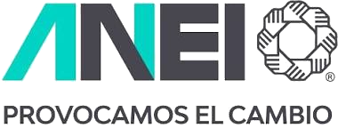
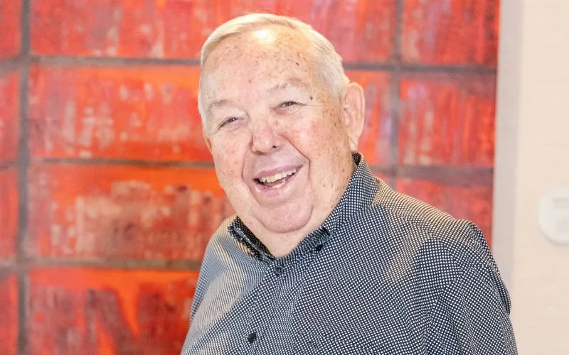
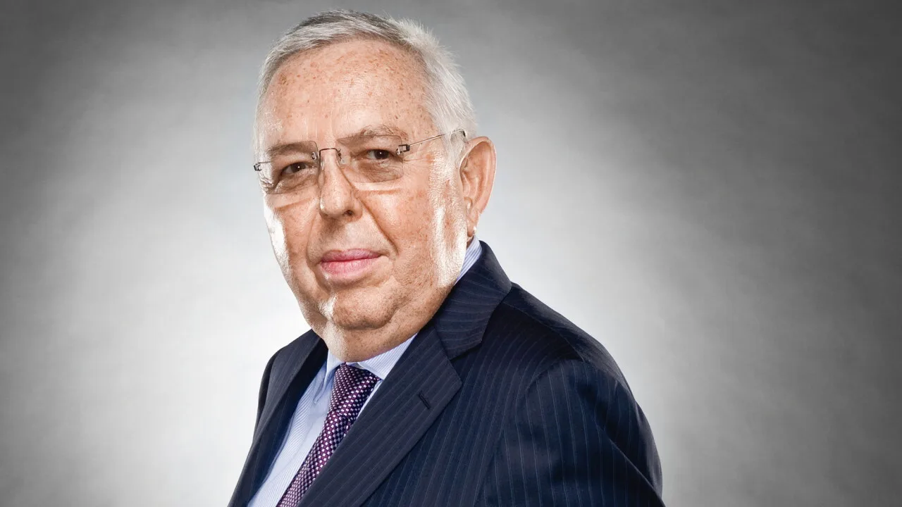

Empresario y político de Nuevo León
FernandoTurner
Dejando huella a través de los años.
01 · Creador de Nuevo León 4.0
Llevó a Nuevo León a la 4ª Revolución Industrial
En 2017, desde la Secretaría de Economía y Trabajo, lanzó la Iniciativa Nuevo León 4.0: un ecosistema donde gobierno, academia e industria trabajan juntos.
2017la lanza; NL, pionero en el país
4universidades más grandes del estado se suman
70proyectos de manufactura 4.0 identificados
$190Mmillones de pesos en fondo para proyectos
46planes de estudio actualizados con temas 4.0
GobiernoSecretaría de Economía y Trabajo · fondo estatal para proyectos
AcademiaUANL · Tec de Monterrey · UDEM · U-ERRE · ICET · Conalep
IndustriaClústeres de NL · automotriz, aeroespacial, TI, energía, agroalimentos
- Robótica
- Nube
- Big Data
- Internet de las cosas
- Manufactura aditiva
- Realidad virtual
- Simulación
- Ciberseguridad
02 · Fundador de la ANEI
La voz de las pymes
Fundó la Asociación Nacional de Empresarios Independientes: agrupa y representa a pequeños y medianos empresarios para participar, promover e impulsar políticas públicas en México y especialmente en Nuevo León.

2006la funda; la preside 9 años, hasta 2015
95%+de las empresas en México son pymes
+100milproductores y empresarios independientes representados
- Crédito para pymes
- Competencia libre y justa
- Reglas fiscales que no castiguen al que cumple
- Digitalización de los negocios
- Inversión para crecer
03 · Fundador de Katcon
De Monterrey al mundo
1993la funda en Monterrey
10países con plantas
40+mercados en el mundo
US$600Mmillones de dólares en ventas (2014)
2010Entrepreneur of the Year · Ernst & Young

04 · Inversor de impacto
Sembrando el
cambio social
+1,000becas apoyadas
+20instituciones apoyadas
+5,000familias beneficiadas en la región norte del país
05 · Servidor público
2015—18
Secretario de Economía y Trabajo de Nuevo León.
6consejos y fideicomisos estatales que presidió o integró, entre ellos Parque Fundidora
9años como fundador y presidente de la Asociación Nacional de Empresarios Independientes

06 · Nunca deja de aprender
Maestría en
Administración
Pública MPA
#1universidad del mundo
(Ranking de Shanghái)
(Ranking de Shanghái)
2005obtiene el título
07 · Hoy
Trazando un rumbo claro para Nuevo León
Basado en 5 pilares:
- 01
Ética pública y combate a la corrupción
- 02
Transparencia y rendición de cuentas
- 03
Gobernanza y participación ciudadana
- 04
Gestión eficiente basada en evidencia
- 05
Bienestar, inclusión y cohesión social
Súmate